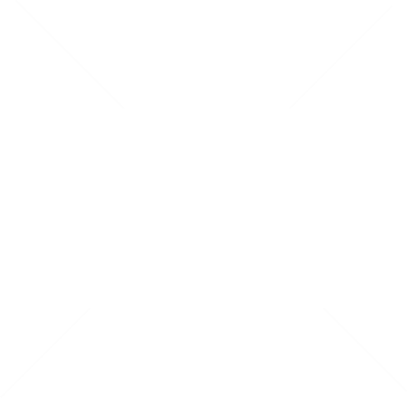

Nascida em 1986, a Biamar é hoje uma marca conceituada no mercado de malhas e tricot do Brasil, criando coleções alinhadas com as tendências mundiais de moda. Focada em consumidores de alma jovem e estilo próprio, a Biamar desenvolve produtos de alta qualidade, utilizando matérias-primas selecionadas, como fios com fibras naturais, algodão, alpacas, modal, lãs, viscoses, linhos e mohair. O mix diversificado de modelos apresentado a cada coleção - marca registrada da Biamar - garante o diferencial que agrada a cada temporada o exigente mercado consumidor.
Com 30 anos de mercado, a Biamar está constantemente investindo em novas tecnologias e matérias-primas para oferecer produtos diferenciados para os seus consumidores. Em sua fábrica com mais de 7.500 metros quadrados de área construída em Farroupilha, no Rio Grande do Sul, a Biamar oferece uma infra-estrutura planejada para atender lojistas com todo conforto e o máximo de praticidade e agilidade.
Apostando no sistema de pronta-entrega, a Biamar oferece aos lojistas espaço próprio com mais de 2500m2. A marca conta ainda com uma equipe de colaboradores preparados para atender com qualidade a demanda atacadista de todo o Sul do país. A fim de fidelizar os seus clientes, tornando-os verdadeiros parceiros da marca, a Biamar oferece as melhores condições de pagamento e negociação, além de um estoque sempre atualizado de malhas e tricot a disposição.
